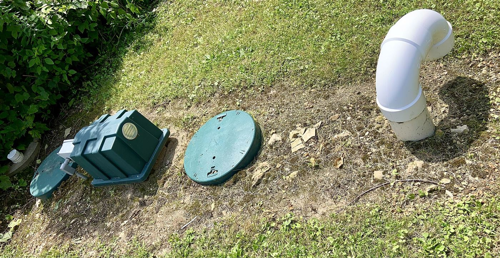
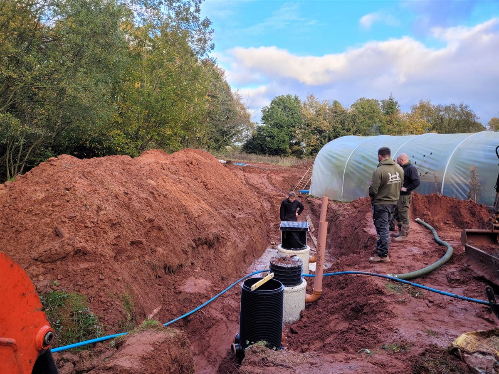
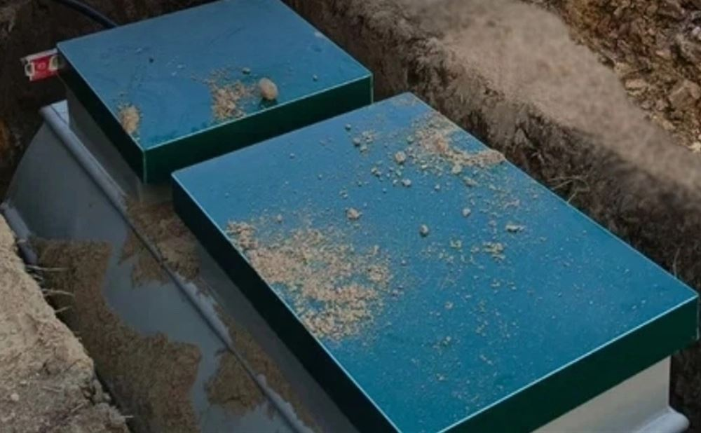
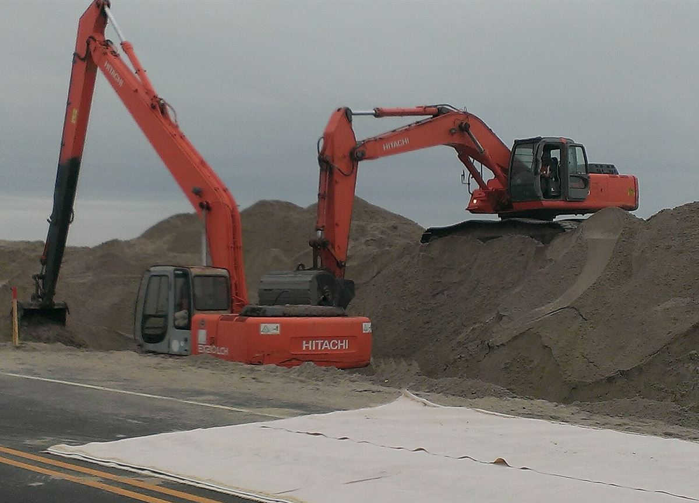

0 ₽
Замеряем
Инженер приезжает на участок бесплатно, смотрит грунт, измеряет уровень воды, подбирает станцию и называет итоговую цену.
Станции биологической очистки с монтажом под ключ в Нижнем Новгороде и области. Работают на высоких грунтовых водах, ассенизатор больше не нужен.
Вызвать инженера бесплатноВесной вода поднимается выше швов и идёт внутрь колец. Септик переполняется, ассенизатор едет снова.
Левее вода выше. Так бывает весной и после дождей.
Станция перерабатывает стоки сама, а не копит их. Ассенизатор на участок больше не приезжает, запаха канализации нет.

Корпус герметичный: не пускает воду внутрь и не выпускает стоки наружу. Станция стоит там, где кольца затапливает.

Корпус служит более 50 лет. Не придётся переделывать через пару сезонов и снова копать участок.

Привозим, копаем, монтируем, запускаем. Если удобнее, шеф-монтаж: приедем и проконтролируем вашу бригаду.

Монтаж занимает один рабочий день. Дату согласуем на замере.
Инженер приезжает на участок бесплатно, смотрит грунт, измеряет уровень воды, подбирает станцию и называет итоговую цену.
Привозим станцию и готовим котлован под ваш грунт и уровень воды.
Опускаем станцию, подключаем трубы и электричество. Засыпаем по технологии: землёй или глиной засыпать нельзя.
Проверяем работу и показываем, как пользоваться. На участке остаются только крышки. Монтаж под ключ или шеф-монтаж, как вам удобнее.
Станция биологической очистки с монтажом под ключ. Подберём под ваш дом и участок на бесплатном замере.
от 200 000 ₽
Рассчитать для моего домаСтанция биологической очистки с монтажом под ключ. Итоговую цену назовёт инженер после замера.
от 250 000 ₽
Рассчитать для моего домаЧтобы вода в доме была такой же беззаботной, как канализация: оборудуем скважину под ключ.
от 100 000 ₽
Узнать для моей скважины630 000 ₽
уйдёт на ассенизатора за 5 лет. Станция Тверь Баланс 4К с монтажом от 200 000 ₽, один раз.
На старте кольца дешевле. Но на высоких грунтовых водах швы пропускают воду, и откачка становится регулярной. Посчитайте в калькуляторе выше, сколько вы тратите на ассенизатора. Станция это разовая покупка, откачивать её не нужно.
Станция перерабатывает стоки, а не накапливает их, поэтому ассенизатор не приезжает. Как за ней присматривать, покажем при запуске.
Да. Станции ставят на любом грунте и при любом уровне воды. Инженер измерит воду на замере и подберёт монтаж под неё.
Ничего. Выезд на участок, замер и подбор станции бесплатные.
Монтаж занимает один рабочий день. Дату согласуем при замере, а в день обращения мы отвечаем на заявку.
Да, оформляем рассрочку. Условия назовёт менеджер после замера.
Да, мы работаем по всему Нижнему Новгороду и всей области. Инженер приезжает на участок сам.
Оставьте телефон. Ответим в день обращения и договоримся о времени замера.